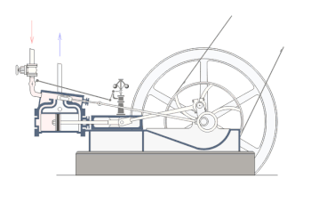

Тема:
тепло, корисне та шкiдливе для нашого здоров'я
Користь тепла для шкіри: З віком обмінні процеси сповільнюються. Під впливом тепла відбувається природне збільшення швидкості оновлення клітин і обміну речовин, що позитивно позначається на тонусі шкіри.
Користь тепла для серцево-судинної системи:
Тепло покращує потік крові, добре тренує судини і всю кровоносну систему.
Користь тепла для нервової системи:
Після теплових процедур багато хто відчуває почуття спокою, легкості у всьому тілі. Емоційна активність зменшується, знижується психічна напруга, що супроводжується м'язовим розслабленням, при якому організм отримує можливість відновлення.
Користь тепла для органів дихання:
Під дією тепла розслабляється зв'язковий апарат грудної клітини і полегшується вдих і видих. Поліпшується прохідність дихальних шляхів і зростає вміст кисню в крові.
Користь тепла для м'язового та опорно-рухового апарату:
Тепло сприяює поверненню максимальної працездатності стомленим м'язам. Ефект посилюється, якщо до цього додати масаж. Під дією тепла поліпшується рухливість хребта і суглобів. Ось чому тепло корисно для хребта, суглобів і зв'язок. Коли ми прогріваємо окремі ділянки, ми сприяємо тим самим нормалізації в них кровотоку. Тепло особливо сприяє розслабленню м'язів, завдяки чому знімаються больові симптоми і стомлення, суглоби і зв'язки стають рухливими і еластичними, усуваються набряклість і хворобливість після фізичного перенапруження.
Користь тепла для імунної системи:
Під впливом тепла в шкірі утворюються цінні продукти білкового обміну, які потоком крові розносяться по всьому організму, збільшується обсяг вдихуваного повітря і, відповідно, - споживання кисню різними тканинами. Відбувається мобілізація захисних механізмів, підвищується імунітет.
Тема: види теплопередачі у мене вдома
Теплопровідність металів приносить користь в побуті (каструлі, сковорідки). Плойки, паяльники. Ще використовується погана теплопровідність: ручки чайників, каструль роблять із пластмаси, А посуд із загартованого скла, речовини з малою теплопровідністю використовують як утеплювачі й теплоізолятори для приміщень. Розріджені гази є найгіршими провідниками. Цю їхню властивість використовують, зокрема, у термосах, для збереження температури однаковою тривалий час
Тема: теплопередача у природі
Передача енергії, зокрема теплової, є фундаментальної областю дослідження для всіх інженерів. Випромінювання робить Землю придатною для проживання і дає поновлювану сонячну енергію. Конвекція є основою механікою, відповідає за потоки повітря в будівлях і повітрообмін в будинках. Провідність дозволяє нагрівати каструлю, всього лише поставивши її на вогонь.
Численні приклади теплопередачі в техніці і природі є й зустрічаються всюди в нашому світі. Практично всі з них грають велику роль, особливо в галузі машинобудування. Наприклад, при проектуванні системи вентиляції будівлі інженери вираховують тепловіддачу будівлі в його околицях, а також внутрішню передачу тепла. Крім того, вони вибирають матеріали, які зводять до мінімуму або максимізують передачу тепла через окремі компоненти для оптимізації ефективності.
Тема: Авiацiя. теплопередача
космос і велика висота - це неприродне середовище проживання для людини.
за бортом літака або ракети - Дуже низька температура і тиск,
людині загрожує загибель при втраті внутрішнього тепла,
при посадці оболонка сильно нагрівається i людині загрожує загибель при отриманні зовнішнього тепла.
оболонка літака і ракети виконується з матеріалів якi погано проводять тепло, щоб уникнути теплопередачі як в одну, так і іншу сторону.
А коли говорять про температуру космосу, то можуть мати на увазі дві різні температури: температуру розсіяного в просторі газу або температуру тіла, що знаходиться в космосі. Як всі знають, в космосі вакуум, але це не зовсім так. Майже весь простір там, принаймні всередині галактик, наповнений газом, просто він настільки сильно розріджений, що не робить майже ніякого теплового впливу на вміщене в нього тіло.
Тема: Теплопередача у тварин
Теплота – основа кінетики хімічних реакцій, з яких складається складний процес життєдіяльності організму. Тому температурні умови є одним з найважливіших екологічних факторів, які впливають на інтенсивність обмінних процесів.
Верхній температурний поріг життя теоретично визначається температурою денатурації білків. Необоротні зміни структури білків виникають за температури +600С, зневоднення організму може підвищити цю межу. Саме такою є температура „теплової смерті” у більшості найпростіших і деяких багатоклітинних організмів.
Тема: запропонуйте способи збереження тепла
Всередині квартири між батареєю і стіною можна встановити захисний екран з металевої фольги. Тепло буде відбиватись і надходити в кімнату.
Потрібно щільно зачиняти двері кімнат і квартири. Запорукою економії тепла є щільно зачинені двері кімнат і квартири. А набагато більший ефект дадуть двері та вікна з ущільнювачами.
Дехто ще наповнює шви між склом та рамою силіконовим герметиком, для старих вікон, де скло бовтається у рамах це може стати у пригоді.
Тема: Вiдсотковий вмiст вологи у снiгу.
100%, тому що поняття "волога" може бути вiдносною, якщо ми говоримо про воду в ролi вологи, то вона буде складати 100%.
Тема: Випаровування
Випароовування - це процес переходу в газоподібний стан.
Випаровування відбувається при будь-якій температурі, але його
інтенсивність з підвищенням температури зростає. Швидкість випаровування залежить від температури, площі вільної
поверхні рідини, атмосферного тиску. Крім того, за однакових зовнішніх
умов різні рідини випаровуються неоднаково. Наприклад, налиті на скляну
пластинку ефір, спирт, вода і масло випаровуються в такому порядку:
спочатку зникне ефір, потім спирт, далі вода і тільки потім масло.
Тема: Чи залежить температура кипіння розчину кухонної солі від концентрації
Вода кипить, коли молекули здатні подолати тиск парів навколишнього повітря для переміщення з рідкої фази в газову фазу. Кілька різних процесiв відбуваються при додаванні розчиненої речовини, що збільшує кількість енергії (тепло), необхідне для води, щоб зробити перехід.
При додаванні солі в воду, хлорид натрію дисоціює на іони натрію і хлору. Ці заряджені частинки змінюють міжмолекулярні сили між молекулами води. На додаток до впливу на водневих зв’язків між молекулами води, є іон-дипольна взаємодія, Кожна молекула води є диполем, а це значить, одна сторона (сторона кисню) є більш негативним, а інша сторона (сторона, водень) є більш позитивним. Позитивно заряджені іони натрію збігаються з кисневою стороною молекули води, в той час як негативно заряджені іони хлору збігаються з водневої стороною молекули води. Іон-дипольномувзаємодія сильніше, ніж водневі зв’язки між молекулами води, тому потрібно більше енергії для переміщення води від іонів і в парову фазу.
Тема: Тепловi двигуни
Принцип роботи теплового двигуна: Тепловий двигун і є посередником між нагрівачем і охолоджувачем. Основним елементом теплового двигуна є робоча речовина. Робоча речовина отримує тепло від нагрівача, переходить до охолоджувача й віддає там частину цього тепла. Охолоджена робоча речовина повертається до нагрівача, і так починається наступний цикл.

Тема: Використання двигунiв та шкода для природи
Значення теплових двигунів величезне, без їх використання неможлива сучасна цивілізація. Більшість електростанцій в нашій країні є тепловими, де використовуються потужні теплові турбіни при виробленні електроенергії. Парові турбіни використовуються і на атомних електростанціях, де освіту пара досягається за рахунок енергії, що виділяється при розщепленні атомних ядер. Весь автомобільний транспорт оснащений двигунами внутрішнього згоряння; дизельні двигуни встановлені на тракторах і локомотивах (тепловозах), на судах річкового і морського флоту. В авіації крім двигунів внутрішнього згоряння використовуються реактивні двигуни, які також відносяться до теплових двигунів.
Робота двигунів пов'язана з викидом в атмосферу відпрацьованих парів з досить високою температурою, а також газів, що містять шкідливі хімічні сполуки. Тому в результаті теплообміну неминуче підвищення середньої температури на Землі. Це може привести до танення льодів, підвищення рівня води Світового океану і затоплення суші.
Зі збільшенням в атмосфері вуглекислого газу СО2, що міститься у вихлопних газах, спостерігається «парниковий ефект». Справа в тому, що нагріта сонячними променями земна поверхня випромінює невидиме теплове випромінювання (інфрачервоні промені), які поглинаються в атмосфері в основному молекулами вуглекислого газу. В результаті температура атмосфери зростає, а за рахунок теплообміну з Землею зростає і температура самої Землі. Є побоювання, що при збільшенні концентрації вуглекислого газу підвищення температури Землі може привести до істотної зміни на ній кліматичних поясів, несприятливо вплине нс умови існування тваринного і рослинного світу.
На атомних станціях відпрацьовані матеріали, що розщеплюються є радіоактивними, тому постає проблема надійного їх поховання.
Для захисту природи, як середовища існування людства, необхідні заходи по створенню нових видів пального на основі водню. Тоді відпрацьовані гази не будуть містити ні хімічно шкідливих речовин, ні вуглекислого газу. Важливим напрямком є перехід автотранспорту на електричну тягу, що пов'язано з розробкою і створенням нових джерел струму. Необхідно створювати теплові електростанції із замкнутим циклом водопостачання, щоб запобігти викиду пари і води, сконденсованої з відпрацьованого пара.
Крім вирішення цих глобальних науково-технічних завдань величезне значення має виховання в кожній людині дбайливого ставлення до природи.